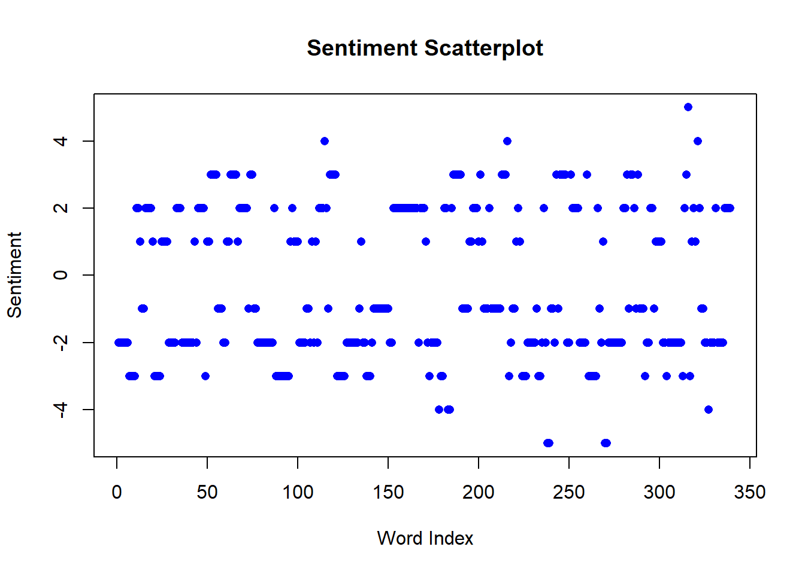
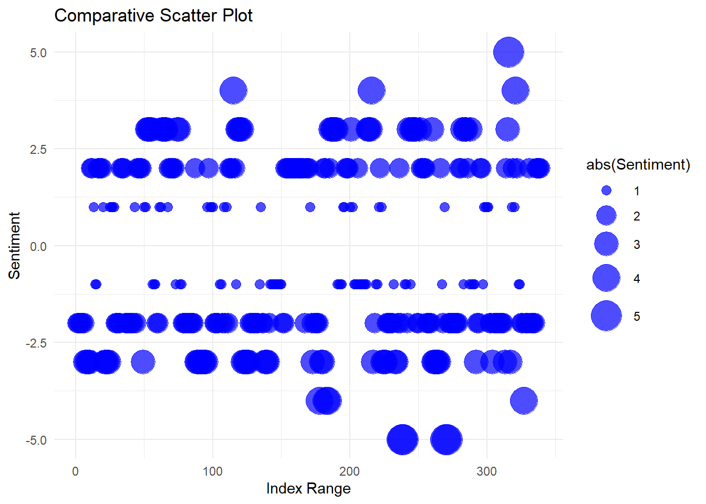
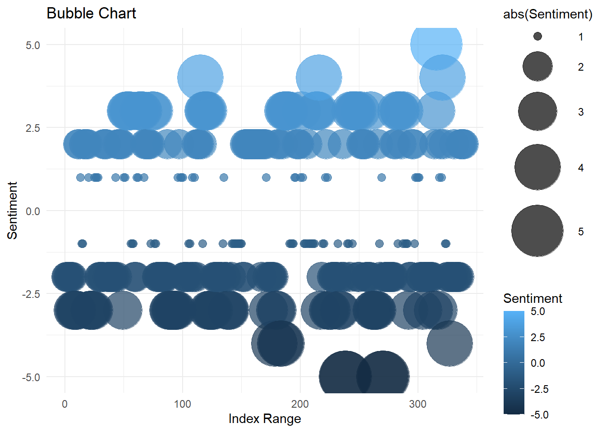
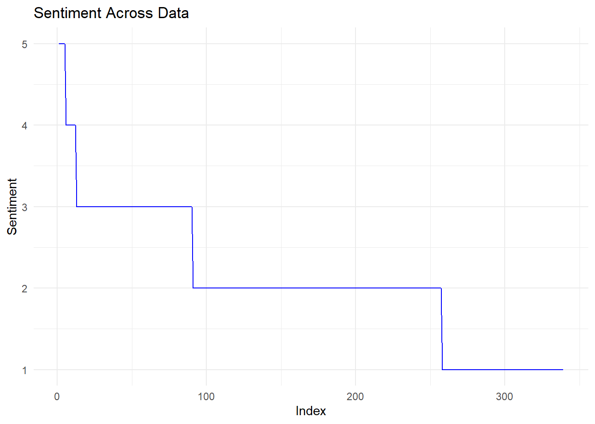

Data set used found at “https://www2.imm.dtu.dk/pubdb/pubs/6010-full.html”
Generate a scatter plot
# Read the CSV filedata <-read.csv("AFINN-111.csv")# Assuming the CSV file has columns named "Word" and "Sentiment"# Replace them with the actual column names in your CSV fileword <- data$Wordsentiment <- data$Sentiment# Generate a scatterplotplot(sentiment, main ="Sentiment Scatterplot", xlab ="Word Index", ylab ="Sentiment", col ="blue", pch =16)

In this analysis, a CSV file containing sentiment data is processed in R to generate a scatterplot depicting the sentiment scores associated with different words. The file consists of two columns: “Word,” representing individual words, and “Sentiment,” indicating their corresponding sentiment scores as integers. The R script utilizes the base plot() function to create a scatterplot, with the x-axis representing the index of each word and the y-axis representing the associated sentiment score. Any missing or non-finite values are handled to ensure the accuracy of the plot. The resulting visualization provides an overview of the sentiment distribution across the words in the dataset, enabling a quick assessment of the sentiment patterns present in the data.
Generate a comparative scatter plot and bubble chart
# Install and load the ggplot2 package# install.packages("ggplot2")library(ggplot2)
Warning: package 'ggplot2' was built under R version 4.3.2
# Read the CSV filedata <-read.csv("AFINN-111.csv")# Create a new column for indexdata$Index <-seq_along(data$Word)# Assuming the CSV file has columns named "Index", "Word", and "Sentiment"# Replace them with the actual column names in your CSV fileindex <- data$Indexword <- data$Wordsentiment <- data$Sentiment# Remove rows with missing valuesdata <-na.omit(data)# Create a comparative scatter plot with index ranges on the x-axisggplot(data, aes(x = Index, y = Sentiment)) +geom_point(aes(size =abs(Sentiment)), color ="blue", alpha =0.7) +scale_size_continuous(range =c(3, 10)) +labs(title ="Comparative Scatter Plot", x ="Index Range", y ="Sentiment") +theme_minimal()

# Create a bubble chart with index ranges on the x-axisggplot(data, aes(x = Index, y = Sentiment, size =abs(Sentiment), color = Sentiment)) +geom_point(alpha =0.7) +scale_size_continuous(range =c(3, 20)) +labs(title ="Bubble Chart", x ="Index Range", y ="Sentiment") +theme_minimal()

The provided R code utilizes the ggplot2 package to generate two distinct visualizations based on sentiment data extracted from a CSV file. The code begins by loading the necessary libraries and reading the data into a dataframe. A new index column is created to represent the row indices. Missing values are handled using the na.omit() function. The first visualization is a comparative scatter plot, where the x-axis displays index ranges, the y-axis represents sentiment scores, and point sizes correspond to the absolute values of sentiment scores. The second visualization is a bubble chart that maintains the same x and y-axis representations but introduces varying bubble sizes based on sentiment magnitude and color-coded sentiment scores. Both visualizations offer insights into the distribution and magnitude of sentiment scores across the dataset, providing a comprehensive exploration of sentiment trends with respect to index.
Generate a circular area chart
# Install and load the ggplot2 packageinstall.packages("ggplot2")
Warning: package 'ggplot2' is in use and will not be installed
library(ggplot2)# Read the CSV filedata <-read.csv("AFINN-111.csv")# Assuming the CSV file has columns named "Word" and "Sentiment"# Replace them with the actual column names in your CSV fileword <- data$Wordsentiment <- data$Sentiment# Create a data frame for plottingplot_data <-data.frame(Word = word, Sentiment = sentiment)# Convert sentiment scores to positive values for line chartplot_data$Sentiment <-abs(plot_data$Sentiment)# Remove missing valuesplot_data <-na.omit(plot_data)# Sort the data by sentiment valuesplot_data <- plot_data[order(plot_data$Sentiment, decreasing =TRUE), ]# Create an index column for x-axisplot_data$Index <-seq_along(plot_data$Word)# Create a line chart with index on the x-axisggplot(plot_data, aes(x = Index, y = Sentiment, group =1)) +geom_line(color ="blue") +labs(title ="Sentiment Across Data", x ="Index", y ="Sentiment") +theme_minimal()

The line chart depicts the sentiment values across the dataset, where each point on the x-axis corresponds to the index of a word in the dataset. The sentiment values, represented on the y-axis, are derived from the “Sentiment” column, with absolute values used for visualization clarity. The blue line traces the fluctuation in sentiment, illustrating how sentiments vary across different entries in the dataset. The ascending peaks and descending troughs indicate the intensity and direction of sentiment changes, offering a visual narrative of sentiment trends throughout the dataset. The index on the x-axis provides a sequential ordering of words, allowing for a straightforward interpretation of sentiment patterns across the dataset.